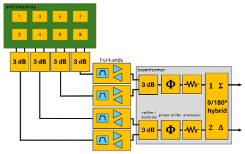
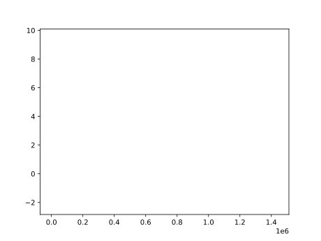
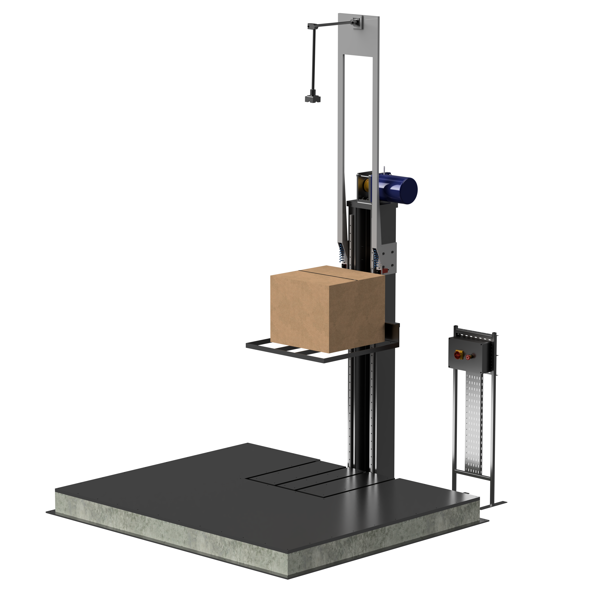
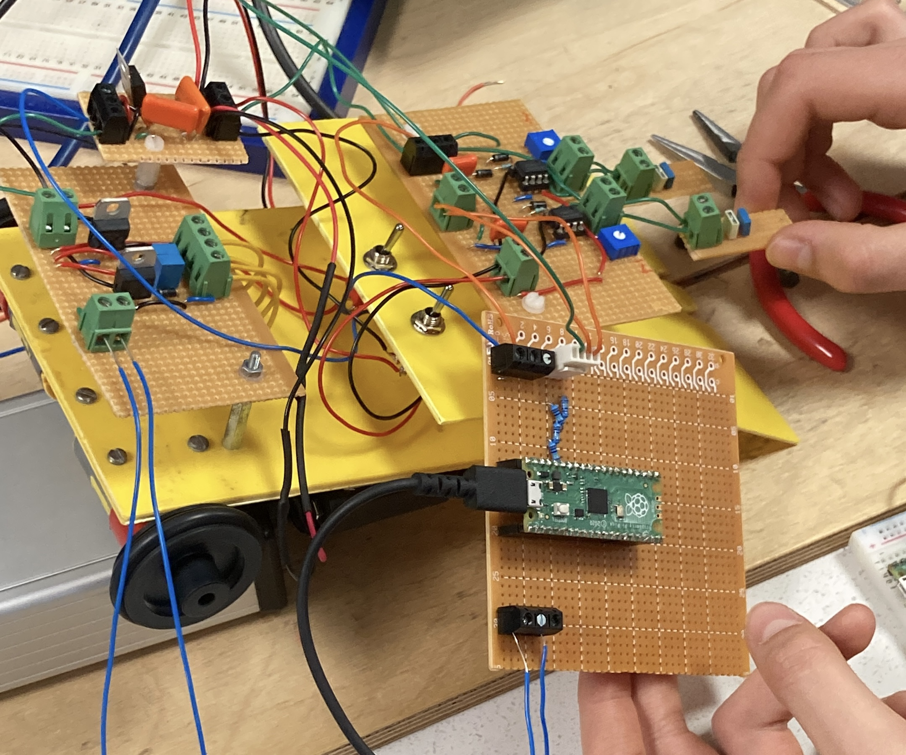

Projects

EE32026 - Radio-Frequency Electronics & Wireless Systems
The coursework for this module was worth 50% of the module grade. I was tasked with the design of an RF circuit capable of telemetry and tracking of small drone platforms such as ESA Class 3, and capable of steering the antenna beams to track the drone across a range of ±60° electronically. The design was around the 2.4GHz band and made use of the Microwave Office Design Suite for simulating the system design and Ansys for the design of suitable patch antennae. This culminated in a report discussing the design choices and methodology undertaken.

EE32009 - Computer Engineering Major
The Coursework for this module was to make use of Tensorflow Python package to design and train a neural network to identify 5 classes of brainwave signals. This was to be done across a range of Signal to Noise Ratios, hence also required substantiative filtering of the test data prior to training, alongside modification of the reference data to better represent the test data as the SNR approached 0dB. This coursework advanced my proficiency in Statically Typed Python substantiatively as well as introducing myself to use of Docker, Shell scripting, GPU acceleration for AI training, and UV Vritual environments.

ME32031 - Group Design and Business Project
As Team Lead for this project, I led meeting organisation, task management, and communications with our industry contact at Renishaw. This was a cross-discipline project which aimed to develop a cost competitive drop test solution for packages speciifcally for Renishaw's use case. I pitched the electronics system architecture, and what processors would be used for the design, how to integrate an IoT solution ot our design, and led the Electrical implementation of the project, calculating electrical loads, capacity, and ensuring both safety and compliance with BS7671, drawing upon my experience gained over the course of my year in industry.

Home Lab Networking
Using TrueNAS Scale on a HP Prodesk 600 G2, Cloudflared running on the NAS and WARP on the connections whilst owning a domain and configuring the IP/CIDR range for my network correctly, I have been able to setup Cloudflare ZeroTrust for my home network, allowing remote connections to my Samba drive, Jellyfin and various other selfhosted services.
GitHub Pages
During College, I undertook a 2 week Front-End Web Dev work experience opportunity where I learned the fundementals of HTML, CSS and Javascript. I also became familiar with the ASP.NET, Bootstrap, Ajax and jQuery. I used the knowledge I had learned from this experience to create this static site on GitHub Pages.
See Repository
EE20194 - Professional Engineering Practice II - Mouse Race
In my Second Year of University, as part of the coursework for EE20194, we were assigned a three person group project top design and build a current sensing electronic mouse which would follow a path around a track using PID control. This made use of peak detector circuits, bandpass filters, KiCad for modelling and a Raspberry Pi Pico as the controller.
EE20084 - Structured Programming
This module focused on learning how to use Python, the importance of version control such as git, alongside good coding practices including the use fo docstrings and doctests. The task was to create a transmission matrix calculator across a range of frequencies and component types. This was to be read from a file and outputted to a .csv filetype. I made use of NumPy, Matplotlib and Pandas and became aware of REGEX during this coursework.

EE10140 - Microprocessors & Interfacing
This was a first year module that made use of PIC16 microcontrolers, and Proteus for simulation. This module covered the relevance of considering debouncing of buttons, interrupt oriented programming and using Assembly and C to directly edit memory registers. As part of this coursework I created a Stopwatch, Digital Lock and Voltmeter.
EE10134 - Introduction To Programming
This first year module focused on teaching the fundementals of programming and the MATLAB® programming language. The primary coursework was to create a series of programs that could read data from a QR-Code, in progressing levels of difficulty such as rotation and being embedded within other images. This taught strong high level programming knowledge and built the foundation of my programming knowledge for the remainder of University.